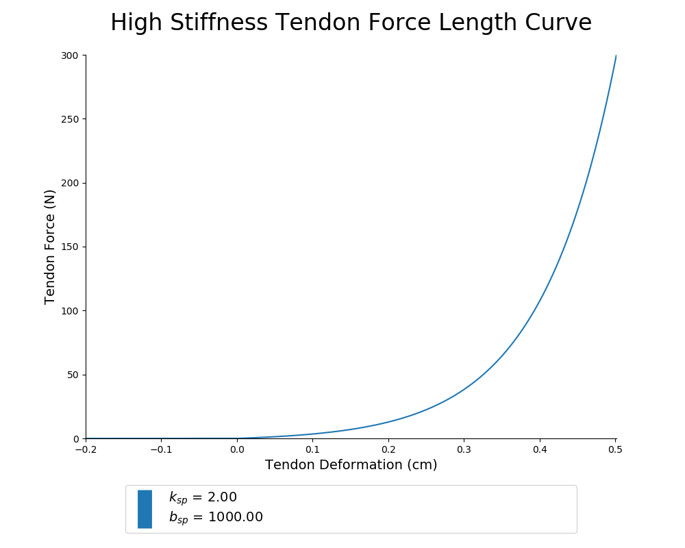

/2020_05_18_160615/MAE
/2020_05_18_160615
/2020_05_18_161247/MAE
/2020_05_18_161247
/2020_05_18_161613/MAE
/2020_05_18_161613
/2020_05_18_161806/MAE
/2020_05_18_161806
/2020_05_18_162155/MAE
/2020_05_18_162155
/2020_05_18_162936/MAE
/2020_05_18_162936
/2020_05_18_163218/MAE
/2020_05_18_163218
/2020_05_18_163546/MAE
/2020_05_18_163546
/2020_05_18_164056/MAE
/2020_05_18_164056
/2020_05_18_164557/MAE
/2020_05_18_164557
/2020_05_18_165319/MAE
/2020_05_18_165319
/2020_05_18_165723/MAE
/2020_05_18_165723
/2020_05_18_170309/MAE
/2020_05_18_170309
/2020_05_18_171052/MAE
/2020_05_18_171052
/2020_05_18_171619/MAE
/2020_05_18_171619
/2020_05_18_172123/MAE
/2020_05_18_172123
/2020_05_18_172611/MAE
/2020_05_18_172611
/2020_05_18_172953/MAE
/2020_05_18_172953
/2020_05_18_173826/MAE
/2020_05_18_173826
/2020_05_18_174328/MAE
/2020_05_18_174328
/2020_05_18_174701/MAE
/2020_05_18_174701
/2020_05_18_175500/MAE
/2020_05_18_175500
/2020_05_18_180321/MAE
/2020_05_18_180321
/2020_05_18_180929/MAE
/2020_05_18_180929
/2020_05_18_181317/MAE
/2020_05_18_181317
/2020_05_18_181834/MAE
/2020_05_18_181834
/2020_05_18_182417/MAE
/2020_05_18_182417
/2020_05_18_182929/MAE
/2020_05_18_182929
/2020_05_18_183829/MAE
/2020_05_18_183829
/2020_05_18_184521/MAE
/2020_05_18_184521
/2020_05_18_184847/MAE
/2020_05_18_184847
/2020_05_18_185706/MAE
/2020_05_18_185706
/2020_05_18_190324/MAE
/2020_05_18_190324
/2020_05_18_192731/MAE
/2020_05_18_192731
/2020_05_18_193344/MAE
/2020_05_18_193344
/2020_05_18_193755/MAE
/2020_05_18_193755
/2020_05_18_194203/MAE
/2020_05_18_194203
/2020_05_18_194713/MAE
/2020_05_18_194713
/2020_05_18_195205/MAE
/2020_05_18_195205
/2020_05_18_195635/MAE
/2020_05_18_195635
/2020_05_18_200231/MAE
/2020_05_18_200231
/2020_05_18_200720/MAE
/2020_05_18_200720
/2020_05_18_201349/MAE
/2020_05_18_201349
/2020_05_18_201710/MAE
/2020_05_18_201710
/2020_05_18_202540/MAE
/2020_05_18_202540
/2020_05_18_203103/MAE
/2020_05_18_203103
/2020_05_18_203541/MAE
/2020_05_18_203541
/2020_05_18_205023/MAE
/2020_05_18_205023
/2020_05_18_205439/MAE
/2020_05_18_205439
/2020_05_18_205818/MAE
/2020_05_18_205818
/Generalization_Trajectories/angleSin_stiffSin
/Generalization_Trajectories/angleSin_stiffStep
/Generalization_Trajectories/angleStep_stiffSin
/Generalization_Trajectories/angleStep_stiffStep
/Generalization_Trajectories
/Results_2020_05_18-01
/sample_babbling_plots
README.md for Figures Created on 2020/05/18 at 14:25.27 PST.
Notes
Extremely high value of tendon stiffness.
Parameters
Figures
 Figure 1: Caption for tendon_stiffness_sweep_01-01.png.